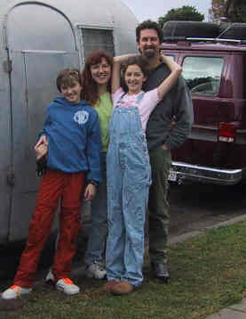

Welcome to the Thomas Family web site!

Finally, at the end, we left gradually, slowly, and not without
considerable reluctance; first staying a full week with our dear friends
Rob and Terri Allison, and then to the Sisk family home in Lucerne Valley
for 2 days. We were all acutely aware that we were leaving the sometimes-invisible support system that we
have in our lives, departing from all the people who love us, and venturing forth
to who-knows-where.
Follow us on our odyssey via "The Trip"
link at left.
What's New
For those 6 of you who are regular visitors to this site, we have added this
"What's new" set of links to new or changed pages.
September 26 to October 1 - Montana
August 27 - Niagra Falls
If you like or use these links, please let us know. If you have
other suggestions regarding either content or organization, we'd also
appreciate hearing from you. Hell, we'd just plain like to hear from
you, whoever you are, regardless of what you'd like to say. If we
don't personally know you, introduce yourself and let us know why the heck
you are reading this site.
This site was last updated on 10/10/01.
Updates will continue at sporadic times, since good net connections are
pretty scarce these days.